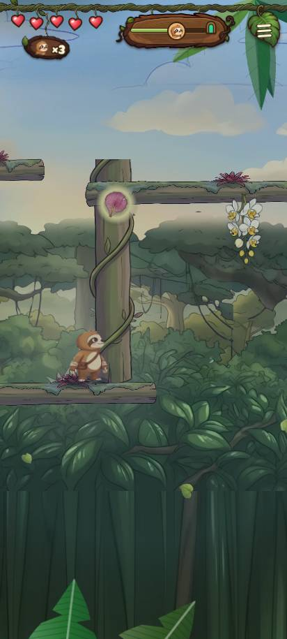
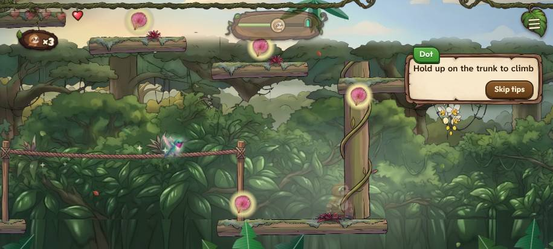
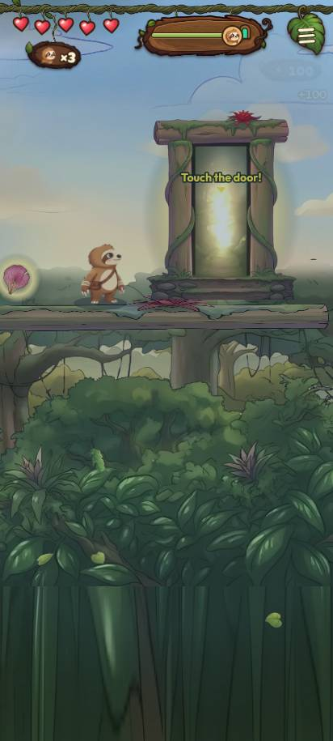
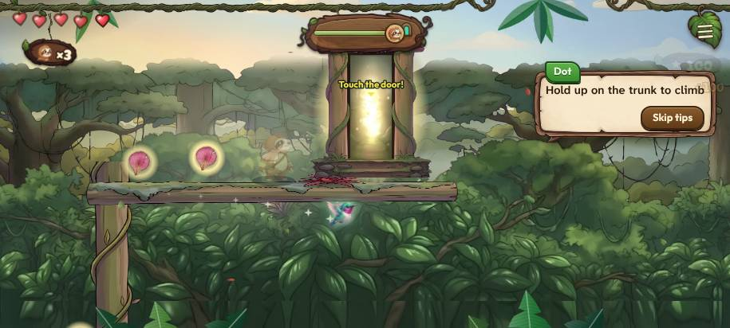

World 1 overview · base = f89b87a5 (contains origin/main 1dc39cd7 + ccr-0d59a91c 19d7ae08) · layout 1, Normal unless said
A measuring stick, not a fun rating: ten families of checks at 10 points each. Each family's rule is listed under "How it is scored".
| variety | 10 | |
| repeats | 10 | |
| dead walking | 8 | |
| pacing | 5 | |
| a miss costs | 0 | |
| padding | 5 | |
| tempo | 0 | |
| something new | 10 | |
| hazards matter (no hazard at all) | 0 | |
| fair and seen (not judged: the bot never played it through, left out of the total) | - |
36 moves in 110 s on the goal route (the shortest way to the shrine, skipping the goal: 36 moves). Letters: J jump (a real fall under it), Q jump the level check can't confirm, C climb, P puzzle, R rope.
Pacing, one letter per 5 s: I intro, F flow, P puzzle, T tight, R rest.




| flag | Normal layouts hit (of 16) | Easy layouts hit |
|---|---|---|
| dead walk | 16 | 16 |
| pacing | 16 | 16 |
| nothing bites | 16 | 16 |
| padding | 16 | 16 |
| one tempo | 16 | 16 |
| repeat | 1 | 1 |
| No breaking branches. |
Not judged: no Normal run ended at the shrine or the sealed door with 3 rescues or fewer, so the landing-in-view and clumsy-thumb numbers below are shown but not scored. Where the bot was put further on: x 2229, x 2901, x 2189, x 1510, x 2779, x 1844, x 1130, x 1562.
| run | end | goal | rescues | counted | landings unseen |
|---|---|---|---|---|---|
| layout 1 normal t0 | shrine at 349.3 s | 0/1 | 11 | no | 0/23 |
| layout 1 normal t1 | time at 360 s | 0/1 | 11 | no | 0/19 |
| layout 1 normal upright t0 | shrine at 349.3 s | 0/1 | 11 | no | 1/23 |
| layout 1 easy t0 | shrine at 267.3 s | 0/1 | 7 | no | 0/26 |
| layout 1 easy t1 | shrine at 202.7 s | 0/1 | 5 | no | 0/21 |
| layout 1 easy upright t0 | shrine at 267.3 s | 0/1 | 7 | no | 0/26 |
| layout 2 normal t0 | shrine at 325.1 s | 0/1 | 12 | no | 0/35 |
| layout 2 normal t1 | shrine at 280.3 s | 0/1 | 10 | no | 0/27 |
| layout 2 normal upright t0 | shrine at 325.1 s | 0/1 | 12 | no | 1/35 |
| layout 2 easy t0 | shrine at 220.5 s | 0/1 | 7 | no | 0/23 |
| layout 2 easy t1 | shrine at 237.9 s | 0/1 | 8 | no | 0/21 |
| layout 2 easy upright t0 | shrine at 220.5 s | 0/1 | 7 | no | 0/23 |
| layout 3 normal t0 | time at 360 s | 0/1 | 13 | no | 0/17 |
| layout 3 normal t1 | time at 360 s | 0/1 | 12 | no | 0/15 |
| layout 3 normal upright t0 | time at 360 s | 0/1 | 13 | no | 0/17 |
| layout 3 easy t0 | shrine at 297.9 s | 0/1 | 8 | no | 0/31 |
| layout 3 easy t1 | shrine at 274.5 s | 0/1 | 7 | no | 0/27 |
| layout 3 easy upright t0 | shrine at 297.9 s | 0/1 | 8 | no | 0/31 |
Normal runs met: swung 0 / 0 / 0 / 0 / 0 / 0, climbed 89 / 96 / 69 / 69 / 93 / 103, roped 11 / 12 / 13 / 10 / 11 / 11, bounced 0 / 0 / 1 / 1 / 1 / 0, hid 0 / 0 / 0 / 0 / 0 / 0, fought 0 / 0 / 3 / 4 / 1 / 0, eagle hits 0 / 0 / 0 / 0 / 0 / 0.
0 of 20 clumsy runs played (layout 1, Normal). Jumps toward the shrine tried 5+ times: 0; under 70%: 0. Left out: 0 hops back the way he came (the bot turning back counts a safe landing behind him as a miss; not a jump the stage asks).
| x | made | tries |
|---|
| gaps to jump | 54 |
| trunk climb | 20 |
| rope shimmy | 8 |
| puzzle room | 2 |
| hidden find | 1 |
The six things (§0b.5): run, jump, vines; pairs 3. New in World 1 order: moves C R P, pairs run+vines, jump+vines, 13 new 3-move runs. Of those, counted as new (the way to the shrine needs it, and a hazard bites): moves C R P, pairs run+vines, jump+vines. Finish: 87% of the stage, pieces . Tempo: 0 hurry, 0 patience beats. Animal-free route: 100%.